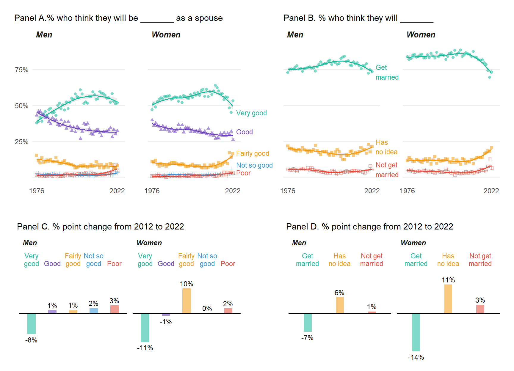

Growing Uncertainty in Marriage Expectations Among U.S. Youth
Abstract
Marriage rates are falling in the United States. We ask whether today’s young adults are likely to continue this trend. Using Monitoring the Future (MTF) Public-Use Cross-Sectional Datasets (1976-2022), this visualization presents U.S. twelfth graders’ marriage expectations. It shows declining optimism that they will be a “very good” spouse, and declining expectations they will eventually marry. Both trends are pronounced in the last 10 years, and both are more dramatic among young women. If these trends hold it may foretell further declines in marriage rates in the coming years.
Keywords
marriage, attitudes, adolescents, gender, visualization
The U.S. marriage rate has fallen 19 percent for men and 17 percent for women over the years 2008-2021 (Cohen 2023). Teenagers’ marital expectations provide one source of information about whether these declines might continue. Brown (2022) reports a decline in expectations to marry among high school seniors from 2006 to 2020. In contrast, Sevareid and colleagues (2023) find stable marriage expectations among Americans ages 15-19 from 2012-2018.
We update this research using the 1976-2022 Monitoring the Future (MTF) Public-Use Cross-Sectional Datasets, a nationally representative annual survey of U.S. high school seniors (Miech et al. 2023). We chart young adults’ marital expectations and include trends in teens’ expectations they will be good spouses, potentially an important driver of marriage outlooks. Figure 1 presents trends in their assessment of how good of a spouse they expect to be (panel A), whether they expect to marry (panel B), and the percentage point change in the latter belief over the last 10 years (panel C). Additional details are available in the online supplement; data access and replication code are available at: https://github.com/jrpepin/MTF_Marriage.
After growing optimism regarding marital expectations, attitudes have become markedly more pessimistic (Figure 1). About 38 percent of young men expected to be a “very good” spouse in 1976, rising to a peak of 61 percent by 2001 (panel A). Young women were initially more optimistic, with 47 percent reporting their future selves’ would be a “very good” spouse in 1976, peaking in 2012 at 64 percent. But optimism has waned since the early 2010s, with young women’s expectations showing a steeper decline than young men’s. Still, by 2022 about 80 percent of youth expect they will be a “good” or “very good” spouse.
Trends in expectations of marriage mirror those for spousal performance (panel B). In 1976, 73 percent of young men and 84 percent of young women predicted they would get married. Marriage expectations grew into the early 2000s, before a steep decline. By 2022, the proportion of young men expecting to marry returned to the 1976 level, and young women’s expectations plunged to 73 percent, almost 10 percentage points lower than their 1976 level. Panel C shows the decline in expectations in the last decade has been twice as large for young women (-14 percent) as for young men (-7 percent). Most of the increase has occurred among those who are unsure if they will marry. We note that the pandemic year 2020 produced a large spike in these trends, potentially due to data quality issues; findings show only a modest rebound after that dramatic change.
Figure 1. Trends in U.S. twelfth-graders attitudes toward marriage.
The figure shows data from the 1976-2022 Monitoring the Future Public-Use Cross-Sectional Datasets, a nationally representative annual survey of U.S. high school seniors. Panel A is young adults’ assessment of how good a spouse they expect to be, by gender (very good, fairly good, good, not so good, or poor), by gender. Panel B is their expectation of marriage (get married, not get married, or no idea), also by gender. The bottom panels show the percentage point change over the 10 years from 2012 to 2022 for how good a spouse they will be (Panel C) and their expectation of marriage (Panel D). Over the last 10 years, the percentage of high school seniors who think they will make very good spouses has dropped, as has the percentage expecting to marry. Data access and replication code are available at: [github-repository-redacted-for-peer-review].
Overall, the last decade shows a large drop in both the proportion of youth who think they will be good spouse and the proportion who expect to get married – especially among young women. Whether today’s teens they will continue to drive marriage rates downward is unclear but the major mood swing on marriage appears persistent at least through 2022, which implies future declines in marriage may be on the horizon.
References
Brown, Adrianne R. 2022. High School Seniors’ Expectations to Marry, 2020. Family Profiles FP-22-04. Bowling Green, OH: National Center for Family & Marriage Research. doi: 10.25035/ncfmr/fp-22-04.
Cohen, Philip N. 2023. “Rethinking Marriage Metabolism: The Declining Frequency of Marital Events in the United States.” Population Research and Policy Review 42:80. doi: 10.1007/s11113-023-09827-6.
Miech, Richard A., Lloyd D. Johnston, Jerald G. Bachman, Patrick M. O’Malley, John E. Schulenberg, and Megan E. Patrick. 2023. “Monitoring the Future: A Continuing Study of American Youth (12th-Grade Survey), (ICPSR 38882).” doi: 10.3886/ICPSR38882.v1.
Sevareid, Eric E., Katherine Graham, Karen Benjamin Guzzo, Wendy D. Manning, and Susan L. Brown. 2023. “Have Teens’ Cohabitation, Marriage, and Childbearing Goals Changed Since the Great Recession?” Population Research and Policy Review 42:87. doi: 10.1007/s11113-023-09833-8.